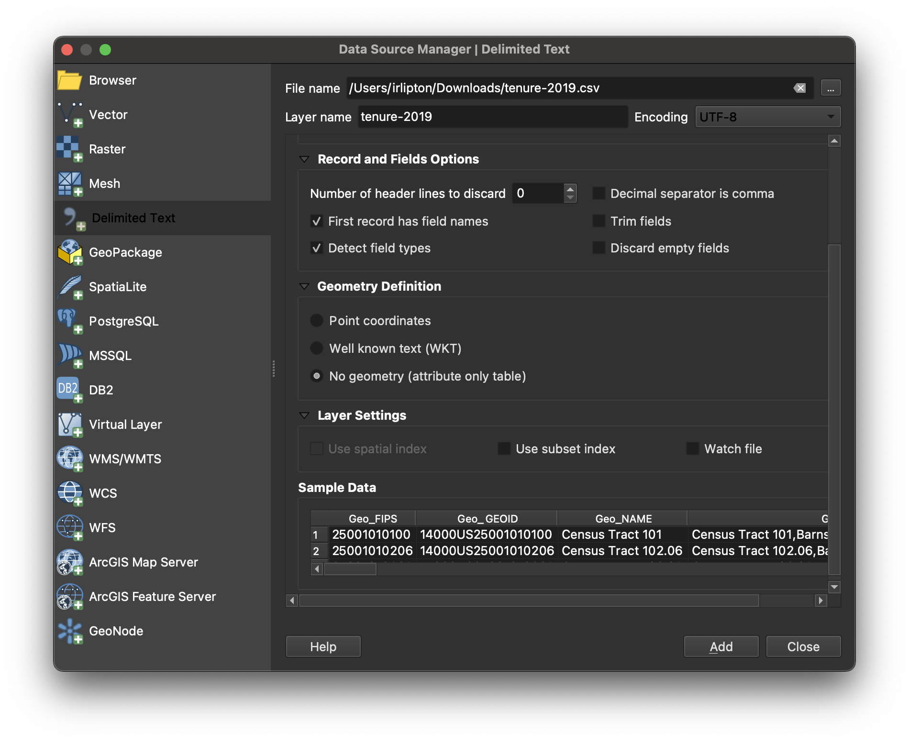
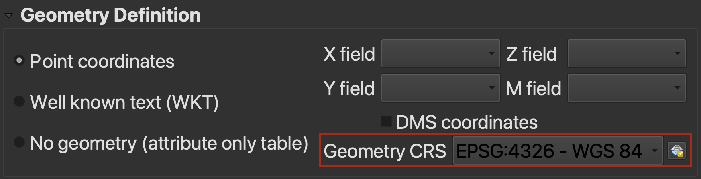

Add Spreadsheet Data (CSV/XLSX) Tutorial
This tutorial will cover how to add tabular data to a QGIS project.
- If your spreadsheet is saved in
.XLSXformat, export it as a.CSVbefore bringing it into QGIS. QGIS will not be able to read.XLSX.
-
Once you have spreadsheet data saved in
.CSVformat, open QGIS. -
In the main QGIS menu (banner across the top of the computer screen), select
Layer → Add Layer → Add delimited text layer.
-
Under
File nameselect the ellipses dots icon to navigate to the.csvyou wish to import. -
Pay attention to
Record and Field options. You can start by accepting the defaults, but depending on the way your data is structured, you may want to make use of some of these settings. -
If your table…
| …has coordinates | …does not have coordinates |
|---|---|
QGIS will be able to display the rows as points. Select Point coordinates and define which field in the spreadsheet is X (longitude), and which is Y (latitude). |
Later on you’ll perform a join. For now under Geometry definition select No Geometry (attribute only table). |
-
Select
Add. -
Select
Close.
Add button not highlighted?
If the "Add" button is greyed out, it is probably a sign that you have not selected a coordinate reference system. Maybe it says something like "invalid projection".

If you are unsure which projection to use, you can start with WGS 84. Open the dialog box by clicking where it says "invalid projection", and search for the WGS 84 code, "4326". Set this as the coordinate reference system, and then the "Add" button should re-appear.
You can also Learn more about working with coordinate reference systems in QGIS.
Example data
Please find an example spreadsheet saved as a .csv with the latitude and longitude formatted correctly so that it should import as points in QGIS.
You can also practice working with location data, and start to visualize it in a shareable web map.